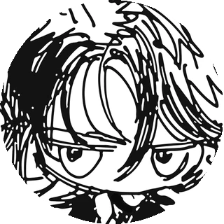

Welcome!
You are our visitor.
Graphic ★ Illustration ★ Goods planning
GRAPHIC ★ ILLUSTRATION ★ GOODS PLANNING

634634
MUSASHI
You are our visitor.
Graphic ★ Illustration ★ Goods planning
GRAPHIC ★ ILLUSTRATION ★ GOODS PLANNING

MUSASHI